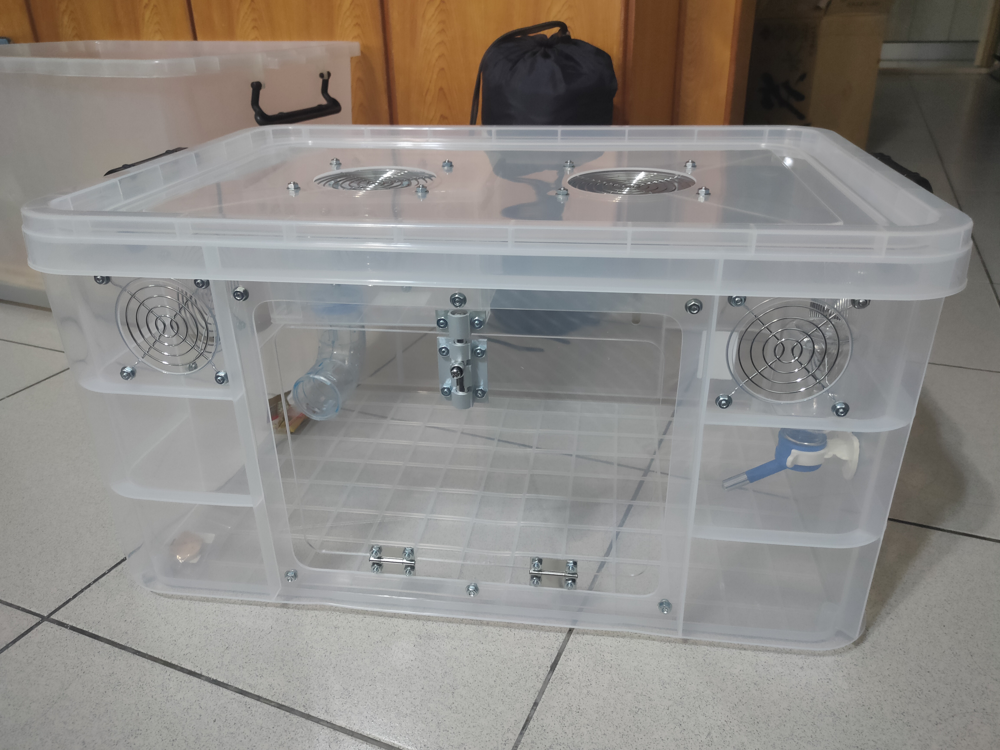
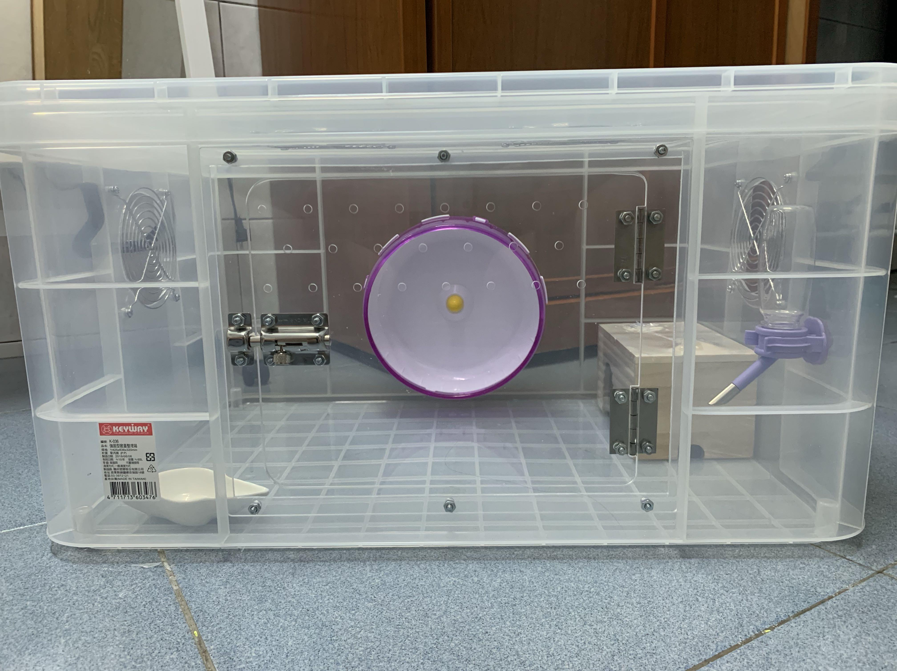
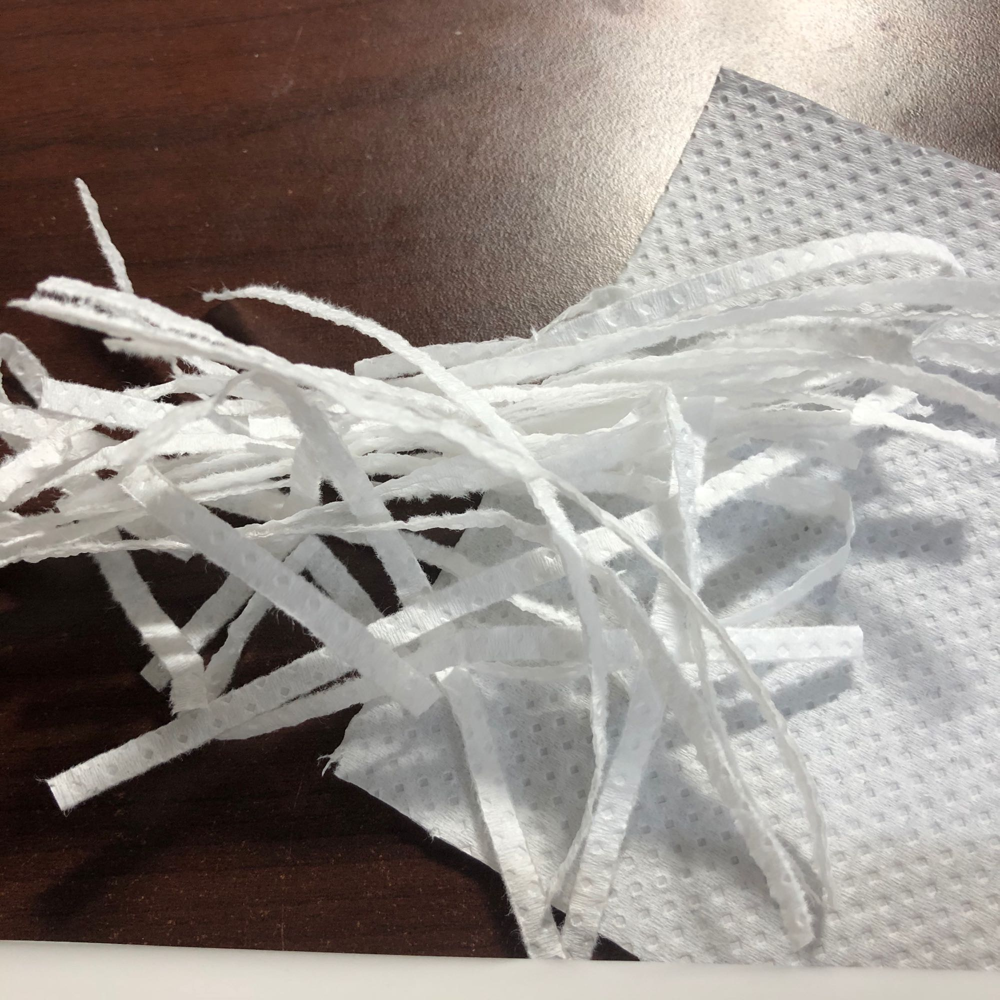
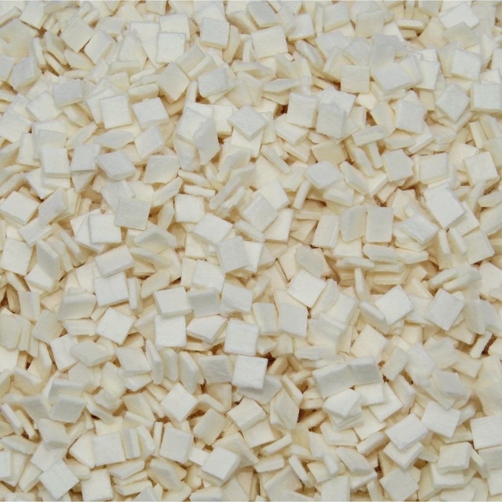
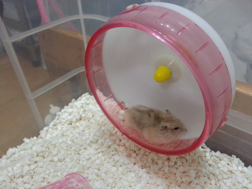
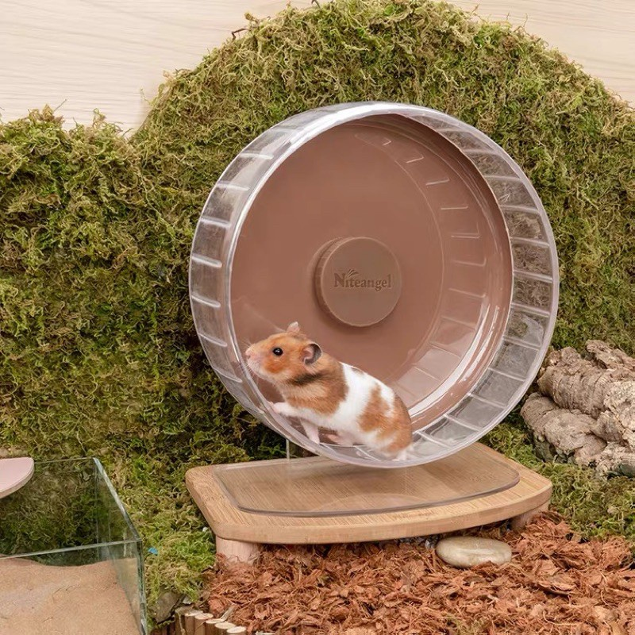
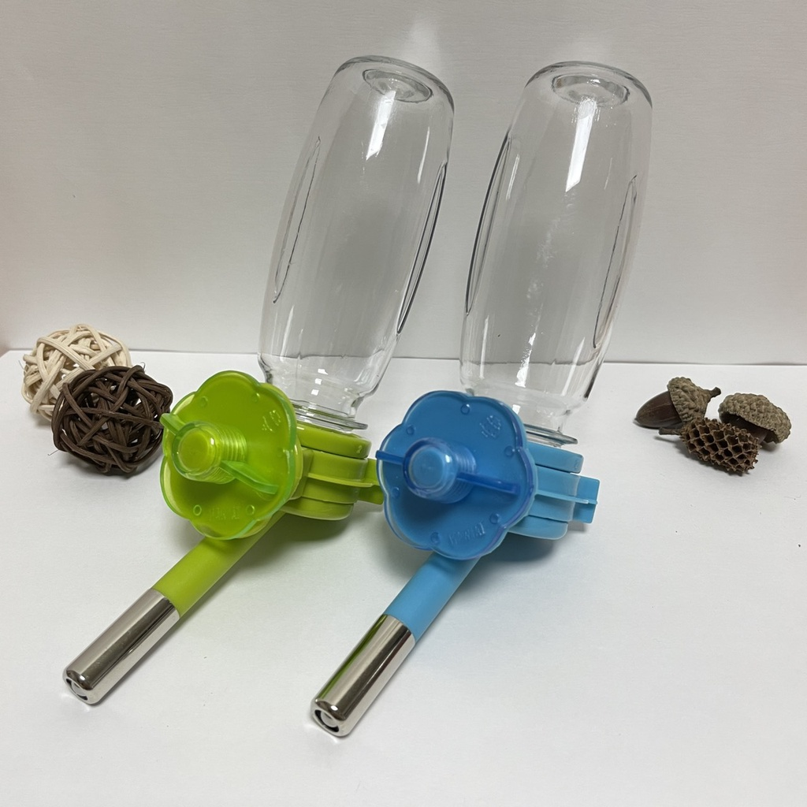
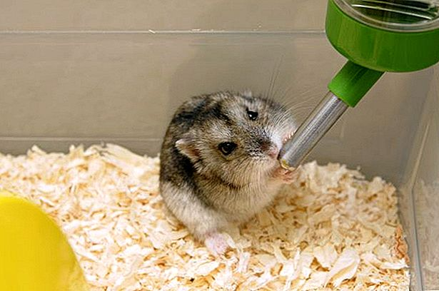
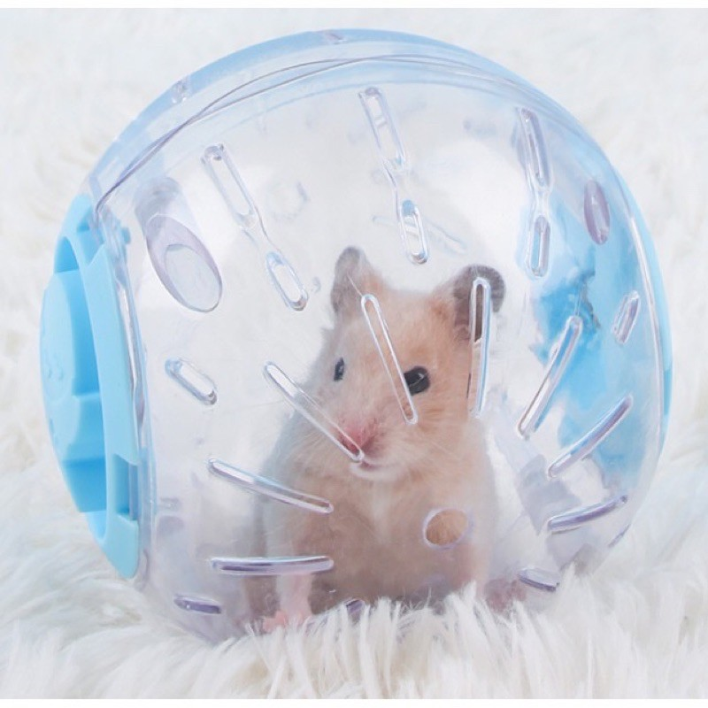
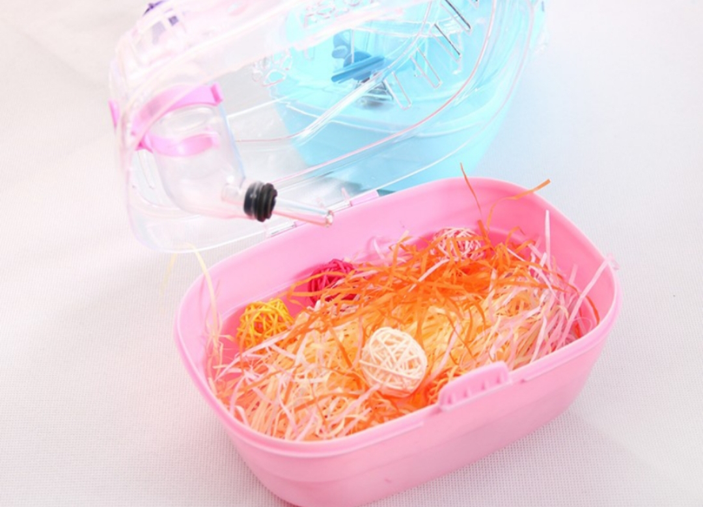

飼育箱 / 籠舍：倉鼠們喜歡運動，可提供大小足夠的箱子，讓他們盡情玩耍~
最廣泛使用，CP值也較高的是整理箱。
飼主常會將家中的整理箱清空並進行改造，倘若對於DIY這方面不擅長，目前市面上也有販賣許多客製化款式。
鼠鼠們適宜空間大小：
三線鼠、一線鼠、老公公鼠：至少長寬 40x30cm的箱子。
黃金鼠：至少長寬 60x40cm左右的箱子。

倉鼠是穴居動物，有挖掘地道、洞穴、築巢的習性。墊材能營造出類似洞穴的環境，滿足牠們需要築巢的本能。
墊材的作用除了調節溫度以外，若在籠子/箱子底部鋪滿墊材可有效降低尿液的異味，也能避免尿尿四處沾染，對於維持環境清潔很有幫助。
可混合使用、可分層使用不同材質。
每日清潔更換局部髒汙墊材，視情況1-2週全面更換墊材即可。
墊材是大面積、長期與鼠親密接觸的東西，所以挑選好的墊材十分重要！

是倉鼠的玩具，也是必備的用具。可以消耗他們旺盛的體力，還有紓解壓力。
尺寸需要配合鼠鼠的體型做選擇，太大會滾不動，而太小會容易卡住。
請挑選平坦無縫隙的滾輪，且24小時不限制時段供鼠鼠使用。


也是一種能讓倉鼠活動的物品。但除非能夠持續盯著鼠鼠的行動，否則並不推薦使用。

小窩、閣樓、竹筒、平台等等。使居住空間有豐富感，除了美觀也可降低鼠鼠的不安感。
便於清潔鼠鼠的排泄物。鼠鼠是否會定點上廁所是透過訓練的，也取決於鼠鼠的個性。
用來鋪在鼠廁中，遇水會結塊方便清理，也可以減少臭味。
不需常駐籠內，可定期提供。侏儒倉鼠有滾砂天性，可平衡毛髮油脂。
倉鼠自身散熱力不好，夏天可以放一塊散熱板(大理石、陶瓷材質)避免鼠鼠中暑，(冬天記得拿掉)。
也可加裝小風扇或在箱子外側放置裝有冰水的瓶子幫助消暑。
玩具不是必需品，但有玩具可以讓鼠鼠的鼠生不要那麼無聊。
網路也有許多人自製倉鼠迷宮等遊戲空間，但務必注意安全。
如果要帶倉鼠出門看醫生的話，一定要用個外出籠裝著，
裡面需鋪上墊材，並放置小窩讓鼠鼠安心、躲藏。
注意：出門前、出門後喝水。避免水瓶在外出途中搖晃外漏，一不小心讓鼠鼠感冒。
